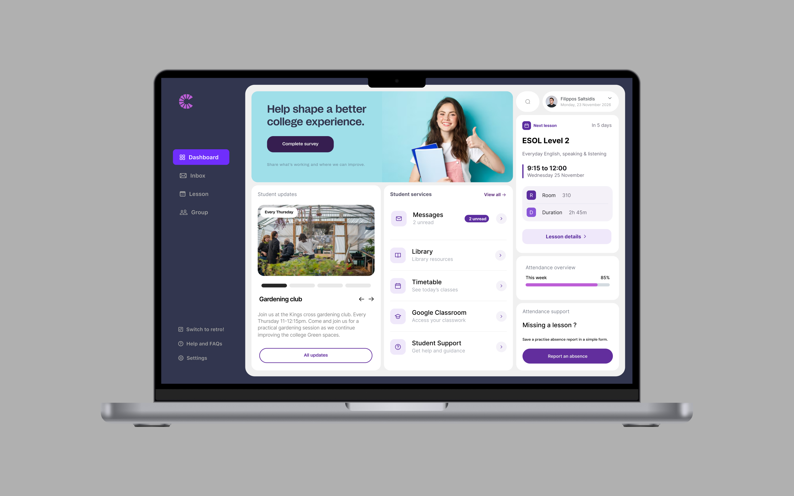

Capital City College
Capital City College students open the portal for one thing: when is my next lesson? The old dashboard hid the answer in a wall of tiles, so a simple question meant hunting through cards and menus. Starting with a student survey, this redesign puts that answer first.
Everything else stays calm and easy to scan. Messages and attendance sit close behind, the services students use every week are one tap away, and a report-an-absence button is easy to find when it matters. A clear hierarchy, generous space and a single purple accent keep it friendly and quick, on desktop and on mobile.
Research
The portal had a simple job: tell students where to be next. Instead, it greeted them with a dense wall of tiles. Before touching a screen, I ran a Google Forms survey with real Capital City College students, and followed up with short conversations to understand what they check first, where they get stuck and what they never use. The same themes came back again and again: too much on screen, labels that weren't clear, and support that was hard to find.
Strategy
The research gave us one clear question to design around: how might we help students see what matters today within seconds of logging in? That became the rule for every decision. The next lesson comes first, everything else earns its place, and help is always within reach. I mapped the portal around a few core destinations, then tested three wireframe layouts against one test: can a student see what matters today without scrolling?
Design
The new dashboard leads with the next lesson, showing the time, room and teacher at a glance. Messages and attendance sit close behind, and the services students use every week are one tap away. A calm navy shell, rounded cards and a single purple accent guide the eye to actions and progress. Generous space and a clear hierarchy keep it friendly, on desktop and on mobile.
Two new features
The survey also showed what the old portal was missing. Next lesson puts the answer to the most common question at the top of the screen. Report an absence replaces emailing or telling a teacher in person with one button and one short form, ending in a clear confirmation.
Testing and results
I tested the prototype with students on real tasks, then refined what slowed them down. Report an absence became a filled button, and messages gained an unread badge. The result is a portal that shows what is happening today in one view, and that students described as clear and less stressful.